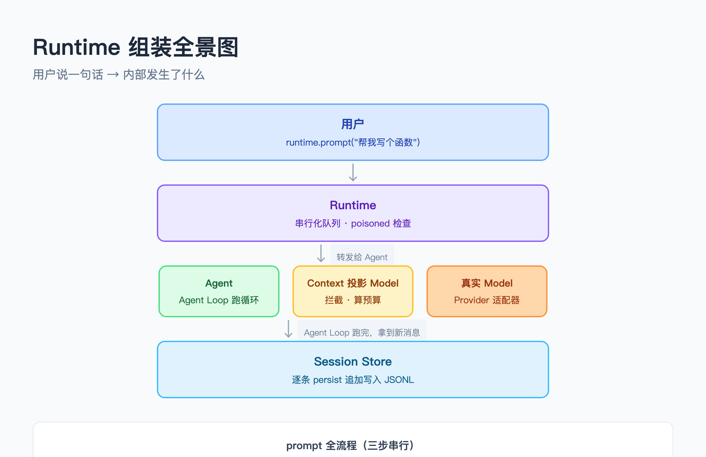

大家好我是郑同学。前八篇我们拆了 Pi 的每个零件：Agent Loop 是发动机，Provider 适配器是变速箱，工具系统是轮子，session 是油箱，context 是节气门。但零件单独放那儿什么都不是——得有人把它们装起来。
这一篇拆 composition.ts（389 行），Pi 的组装车间。整个文件干一件事：把 session、context、model、tools、resources 拼成一个 Runtime 对象，让用户一句 runtime.prompt("帮我写个函数") 就能跑起来。
先看整体流程图，后面拆每层的原理。

Runtime组装全景图：用户层→Runtime层→运行时层→持久化层
● ● ●
前面拆的每个模块都是独立的——session.ts 只管存取消息，context.ts 只管算预算，agent.ts 只管跑循环。它们之间怎么连接，谁创建谁，谁持有谁，全部在一个地方决定。
composition.ts 就是这个唯一的接线点。源码注释写得很直白：
composition root 只在这里把 session、context、resources、extensions、tools 和有状态 Agent 接成一个对象图。
这是 composition root 模式——所有依赖关系在一个地方声明，不散落在各模块里。零件不知道彼此的存在，只知道自己的接口。换一个 Provider？只改 deps.model。换一个 session 后端？只改 deps.session。
● ● ●
组装过程不是随便 new 一堆对象。顺序由依赖关系决定：
// composition.ts:317-353（核心骨架）
export async function createRuntime(config, deps): Promise<Runtime> {
// 1. 从 session 读回历史，沿 parentId 回溯出当前分支
const entries = await deps.session.entries();
const initialPath = validateSessionSelection(entries, config.activeLeafId);
const initialMessages = messagesIn(initialPath);
// 2. 合并 system prompt + resources
const systemPrompt = combinedSystemPrompt(config.systemPrompt, deps.resources);
// 3. 创建 context 投影 model（关键适配层）
let runtime!: RuntimeImpl;
const model = createContextProjectingModel(
deps.model, { systemPrompt, context: config.context },
() => runtime.contextSnapshot(),
);
// 4. 创建 Agent
const agent = new Agent({ model, tools: deps.tools, initialMessages, systemPrompt });
// 5. 创建 Runtime
runtime = new RuntimeImpl(agent, initialPath, deps);
return runtime;
}
每一步都依赖前面的结果。先有初始消息才能创建 Agent，先有 model 适配层才能传给 Agent，先有 Agent 才能创建 Runtime。删掉任何一步，后面都跑不了。
● ● ●
组装时有一个不太直觉的设计——createContextProjectingModel。真实的 model 已经存在了，为什么还要再包一层？
因为 Agent 和 context 管理的节奏不同步。
Agent 跑循环时，每轮都把完整的消息历史传给 model。但这些消息里有一部分是还没持久化到 session 的临时消息——当前这轮 run 刚产生的助手回复和工具结果。
context projecting model 在调用真正的 model 之前先拦截一次，把临时消息接到 active path 后面，合成完整的 entry 列表，交给 buildContext 算预算，然后才转发给真实模型：
// composition.ts:148-177（核心骨架）
export function createContextProjectingModel(
inner: Model, config, getSnapshot,
): Model {
return {
stream(context, options = {}) {
const snapshot = getSnapshot();
// 临时消息 + 已持久化消息 → 合成完整 entry 列表
const projected = buildContext(
temporaryEntries(snapshot, context.messages),
{ maxTokens: config.context.total, ... },
);
// 用投影后的消息调用真正的模型
return inner.stream({
systemPrompt: projected.systemPrompt,
messages: structuredClone(projected.messages),
tools: structuredClone(context.tools),
}, { signal: options.signal });
},
};
}
这是一个装饰器模式——不改原始 Model 接口，在外面套一层。Agent 不知道这层的存在，它以为自己直接在跟模型对话。
● ● ●
用户调 runtime.prompt("问题") 时，内部走三步：
// composition.ts:248-271（核心骨架）
prompt(value: string): Promise<AgentRunResult> {
// 串行化：等前一个 prompt 完成
const operation = this.operationTail.then(async () => {
// 记住当前消息数量
const beforeCount = this.agent.getState().messages.length;
// 第一步：Agent Loop 跑完
const result = await this.agent.prompt(value);
// 第二步：提取新消息（内存中，还没落盘）
const suffix = result.messages.slice(beforeCount);
// 第三步：逐条 persist 到 session JSONL
await this.persist(suffix);
return structuredClone(result);
});
this.operationTail = operation.then(() => undefined, () => undefined);
return operation;
}
三步串行执行，用 Promise 链保证——前一个 prompt 没跑完，下一个必须等。不是并发，是排队。
persist 逐条追加写入，每条消息生成唯一 id，parentId 指向前一条：
// composition.ts:222-246（核心骨架）
private async persist(messages: readonly AgentMessage[]): Promise<void> {
let parentId = this.activeLeafId;
for (const message of messages) {
const entry: MessageSessionEntry = {
id: this.deps.createId(),
// parentId 指向前一条，串成链
parentId,
timestamp: this.deps.now(),
type: "message",
message: structuredClone(message),
};
await this.session.append(entry);
this.activePath.push(structuredClone(entry));
this.activeLeafId = entry.id;
parentId = entry.id;
}
}
这就是 EP07 讲的 parentId 链表，在这里真正接上了——每条新消息的 parentId 指向前一条，追加到 session 后同步更新 activeLeafId。
● ● ●
persist 过程中任何一条消息写入失败，整个 Runtime 标记为 poisoned，后续所有 prompt 直接拒绝。
为什么不重试？ 和 EP07 session.ts 的 tainted 一样：不确定失败到什么程度。可能是磁盘满（重试也没用），可能是文件系统损坏（重试更糟）。
这个设计在 Pi 里出现了三次：
session.ts 的 tainted——session 文件写入失败 → 永久拒绝composition.ts 的 poisoned——persist 失败 → 永久拒绝coding-tools.ts 的 MutationQueue reject——原子编辑失败 → reject 全部fail fast，不重试，不吞错，不带着病跑。
● ● ●
CC 的组装在 Agent.ts 和 Cli.ts 里。
① 组装入口
Pi 用一个 createRuntime 函数完成所有组装。CC 用 Agent 类的构造函数 + 一系列 init 方法。两边都是 composition root 模式。
② context 适配
Pi 用装饰器在 model 外面套一层做 context 投影。CC 的 Agent 类内部维护独立的 context 管理逻辑，在每次 turn 开始前做 context window 检查和自动压缩。思路一样——在模型调用前先算预算——CC 内联在 Agent 里，Pi 拆成独立装饰器。
③ 操作串行化
Pi 用 operationTail（Promise 链）保证 prompt 串行执行。CC 也用类似的 Promise 队列，但 CC 还支持并发子 Agent——多个 Agent 实例各自独立运行，共享同一个 session 存储。Pi 的 Runtime 是单线程串行的。
两边组装思路一致：composition root + context 投影 + 串行化 + fail-closed。差别在 CC 支持并发子 Agent。
● ● ●
口诀：一个函数装全部，model 套层算预算，跑完才写盘，坏了就不跑。